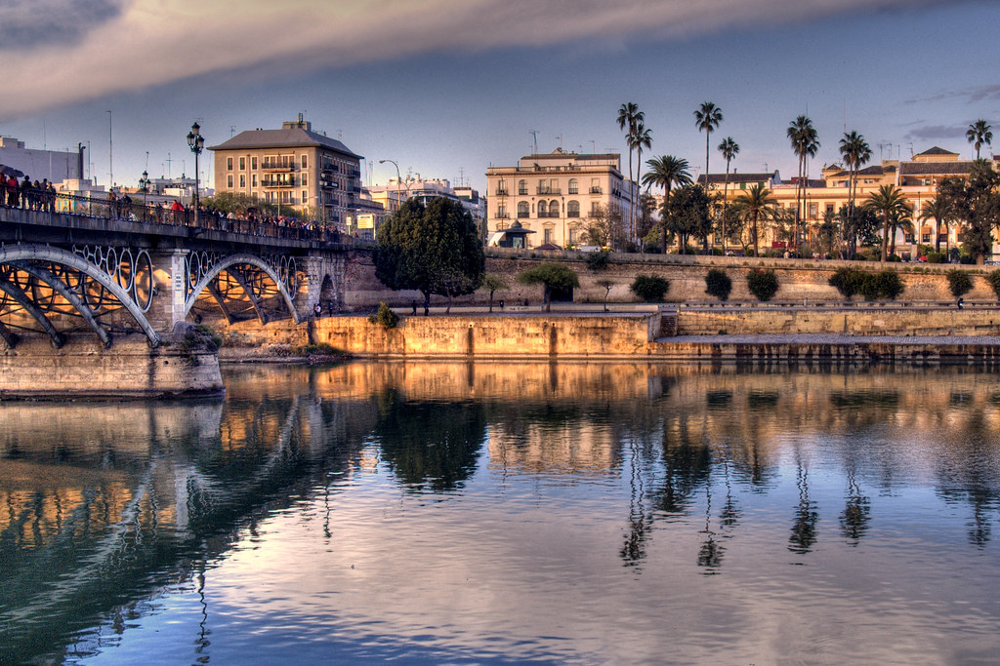
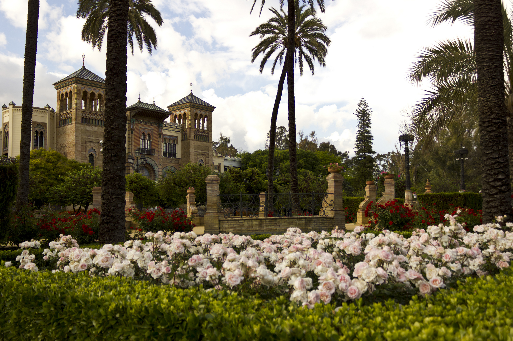

Hotel Don Paco
Plaza Padre Jerónimo de Córdoba, 4
Sevilla
Fechas disponibles: 4 al 9 de Junio
Alojamientos
Hotel Bécquer
C. Reyes Católicos, 4Eurostars Torre Sevilla
Plaza Alcalde Alfredo Sánchez Monteseirín, 2Hotel Fernando III
C. San José, 21Itinerario
Día 1 - 4 de junio
- Llegada a Sevilla y check-in en el alojamiento
- Paseo por el centro histórico
- Plaza Nueva y entorno de la Catedral
- Cena de bienvenida con tapas sevillanas
Día 2 - 5 de junio
- Visita a la Catedral de Sevilla
- La Giralda
- Real Alcázar de Sevilla
- Paseo por el barrio de Santa Cruz
Día 3 - 6 de junio
- Plaza de España y Parque de María Luisa
- Archivo de Indias
- Paseo en bicicleta por el río Guadalquivir
- Tarde libre
Día 4 - 7 de junio
- Excursión a Itálica (Santiponce)
- Anfiteatro romano
- Regreso a Sevilla
- Puesta de sol en Triana
Día 5 - 8 de junio
- Mercado de Triana
- Paseo por el barrio de Triana
- Espectáculo de flamenco
- Cena de grupo
Día 6 - 9 de junio
- Mañana libre para compras
- Último paseo por la ciudad
- Regreso
Actividades

Culturales
- Catedral de Sevilla
- Real Alcázar
- Archivo de Indias

Aventuras
- Paseo en bici por el Guadalquivir
- Ruta por Triana

En naturaleza
- Parque de María Luisa
- Plaza de España
Precios: Desde 1800 € a 2700 €